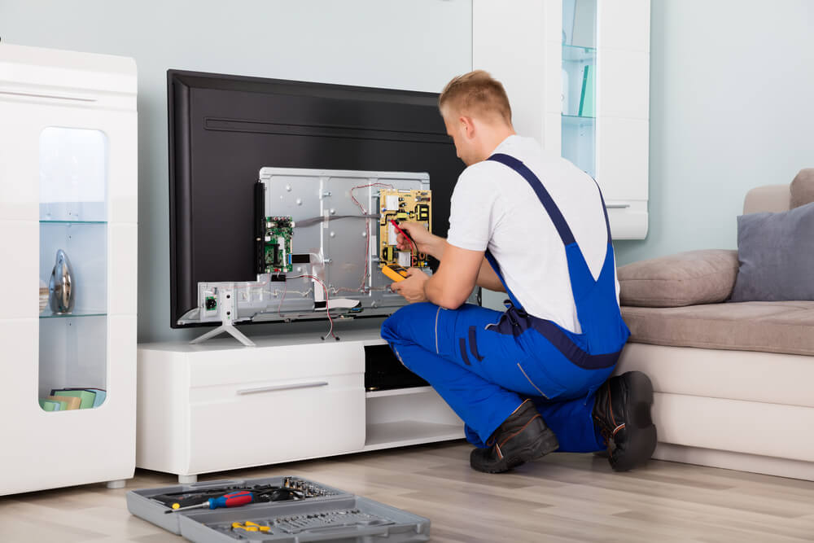

تقنيات الصيانة المتقدمة لشاشات العرض الحديثة
تتطلب شاشات التلفزيون الذكية والحديثة دقة متناهية في التشخيص والتعامل، نظراً لدقة المكونات الإلكترونية الدقيقة وحساسية اللوحات المطبوعة (SMD). نحن في المركز المعتمد نوفر أحدث أجهزة الفحص الرقمية لاكتشاف الأعطال الدقيقة قبل الشروع في الإصلاح.
يتعامل مهندسونا مع كافة تقنيات العرض بما فيها LED, OLED, QLED وشاشات الـ Curved المعقدة، مع توفير قطع غيار أصلية ومطابقة لجميع تقنيات الدقة (FHD, 4K, 8K) لضمان استعادة جودة الصورة والنقاء الأولي للجهاز.
خدمة تغيير أشرطة الليد (Backlight) بالأصلية
يعد عطل (الصوت يعمل بدون صورة) من أشهر أعطال الشاشات، وينتج عن احتراق المساطر الضوئية. نقوم بتغيير طقم الليدات بالكامل بأطقم أصلية معتمدة مع ضبط قيم الفولتية الصادرة من كارت الباور لتفادي تكرار العطل وضمان عمر افتراضي طويل.
خطوات ومميزات الصيانة داخل المركز والموقع
- فحص دقيق لكارتات الباور والـ Mainboard باستخدام الميكروسكوب الإلكتروني لتحديد القطع التالفة وتغييرها.
- معالجة أعطال الخطوط الطولية والعرضية بالبانل باستخدام أجهزة الضغط والتصحيح التخصصية (COF Bonding).
- توفير شاشات وبانلات معتمدة بأحجام مختلفة بدءاً من 32 بوصة حتى الشاشات العملاقة 85 بوصة.
- إصلاح وتحديث السوفت وير وإعادة برمجة الفلاشات (SPI Flash & eMMC) للشاشات السمارت المتوقفة على اللوجو.
- تقديم وثيقة ضمان معتمدة ومسجلة بالسيريال نمبر تتراوح بين 6 إلى 12 شهراً على كافة أشكال الإصلاح.

صيانة الشاشات
إصلاح جميع أعطال الشاشات LED و OLED واستبدال الليدات والبوردات بأقطع غيار أصلية.
خدمات الدعم السريع وطلب الصيانة المنزلية
نوفر سيارات مجهزة لنقل الشاشات الكبيرة بأمان في حال استدعى العطل الصيانة داخل المعمل الفني، مع إمكانية إنجاز صيانة الليدات والبلاطات المنزلية في موقع العميل. للتواصل الفوري المباشر عبر الهوت لاين:
أرقام التواصل المباشر والسريع
إرشادات هامة للحفاظ على عمر الشاشة
- تجنب استخدام الملمعات السائلة مباشرة على الزجاج لتفادي تسرب السائل إلى فلاتات البانل السفلية واحتراقها.
- استخدام مشتركات كهربائية مزودة بموصلات حماية ضد ارتفاع وتذبذب التيار الكهربائي لحماية كارت الباور.
- تقليل نسبة إضاءة الخلفية (Backlight) إلى 70% أو 80% من إعدادات الصورة لإطالة عمر الليدات الافتراضي.
مواعيد استقبال الشاشات والبلاغات
أوقات العمل اليومية
نستقبل اتصالاتكم وبلاغات الأعطال يومياً من 9:00 صباحاً حتى 10:00 مساءً بما في ذلك أيام الجمعة والعطلات.
التغطية والنقل الآمن
فريق متحرك مجهز لتغطية جميع المحافظات مع وسائط حماية خاصة لنقل الشاشات ذات الأحجام الكبيرة.